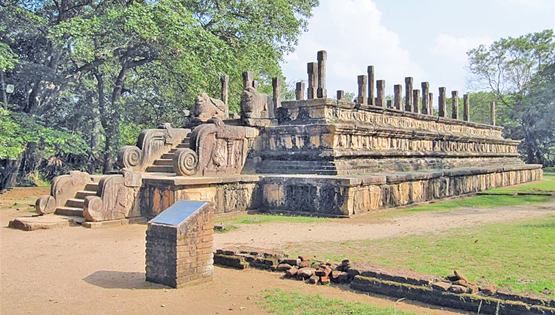

Polonnaruwa City

Polonnaruwa is situated in North Central Province in Srilanka. Polonnaruwa City has been built as two main areas. One of these is Kaduruwela city and other one is royal ancient city of the Kingdom of Polonnaruwa. Polonnaruwa city belongs 3,293 km² area from whole area of Sri Lanka. Polonnaruwa is considered as the second most ancient kingdom of Sri Lanka. After the kingdom of Anuradhapura collapsing, under the administration of King Wijayabahu the Polonnaruwa ancient kingdom was established. After the governance of King Wijayabahu, Polonnaruwa Kingdom was conducted King Prakramabahu and King Nishshankamalla consecutively. People consider that king Parakramabahu is the man who provided the greatest service to literatural, religious, educational, cultural and other main aspects of the country.
By today many ancient ruins have remained in Polonnaruwa city such as Parakrmabahu maligaya, Nelum pokuna, Polonnaruwa Watadageya, Shiwa Devol 1 and 2, Pothgul wehera, Nissanka Latha Mandapaya, Rankoth Vehera, Gal Viharaya. Most of the buddhists are going to worship Gal wihara today also. Most of the tourists also go to visit polonnaruwa city and other places which are situated near the polonnaruwa city today also.Inaddition to these religious places and ancient sites, so many beautiful scenes are in polonnaruwa like Parakrama Samudhraya, Minneriya National Park, Minneriya Wewa. Therefore this is also considered as a main tourist destination.